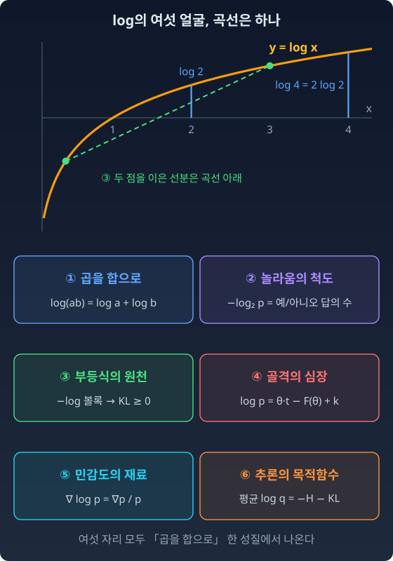

전체 지도
앞에서 줄곧 눈에 밟히는 것이 있었다. 언어 모델을 학습시키는 코드는 확률 대신 로그 확률을 주고받고, 손실은 정답 토큰에 준 확률의 로그로 잰다. 이 책에서도 log는 곱을 합으로 바꿀 때 나오고, 놀라움을 잴 때 나오고, 지수족의 골격에서도, 민감도를 잴 때도 나왔다. 데이터로 모형을 맞출 때는 로그우도(모형이 데이터에 준 확률, 곧 우도의 로그)로 또 나왔다. 매번 다른 이름으로, 매번 다른 이유로. 왜 같은 함수가 이렇게 많은 문을 열고 있을까? 우연일까?
분포 사이를 재는 자도 그렇다. 이 책은 KL 발산, 브레그만 발산, 피셔 계량이라는 세 자를 자리마다 따로 꺼내 썼다. 셋은 서로 남남일까? 그리고 작은 걸음을 재는 자는 왜 하필 피셔였을까? 이 장은 지금까지 만든 도구를 한 장의 지도에 올려 놓고 이 물음들을 하나씩 확인한다.
log: 곱을 합으로 바꾸는 하나의 곡선
log가 나온 자리를 하나씩 다시 적어 보면, 그 자리들 사이에 무엇이 공통일까? 먼저 여섯 자리를 늘어놓고, 그 뒤에 한 겹씩 벗겨 보자.
여섯 자리
지금 기억을 더듬어보자.
① 곱을 합으로. 우리는 곱셈을 덧셈으로 바꾸는 렌즈를 만났다.
리히터 규모, 데시벨, pH는 곱으로 커지는 세계를 더하기로 느끼게 해 주는 번역기다. 두 분포를 섞는 길에는 더해서 섞는 길과 곱해서 섞는 길이 있었다. 곱한 뒤 합이 1이 되게 다시 나누는(정규화) 둘째 길(e-길)도 log를 씌우면 덧셈의 길이 되었다. 그때 log는 그 길을 열어 주는 도구였다.
② 놀라움의 척도. 독립사건의 놀라움이 더해지려면 곱을 합으로 바꾸는 함수가 필요했다. 연속이고 단조인 함수 가운데 그런 것은 log(의 상수배)뿐이었다. 그래서 −log p가 놀라움, 곧 그 결과를 전해 들을 때 새로 받아야 하는 예/아니오 답의 개수가 되었다. 그때 log는 정보량의 단위를 만드는 도구였다.
③ 부등식의 원천. −log는 볼록하다. 곡선 위 두 점을 잇는 선분(할선)이 늘 곡선 위에 있다는 간단한 사실(젠센 부등식)에서 KL 발산(한 분포를 다른 분포로 대신할 때 치르는 손해) ≥ 0이 나왔다. 그때 log는 부등식의 원천이었다.
④ 골격의 심장. 지수족은 log를 씌우면 θ에 대해 1차식이 되는 분포의 모임이었다. θ는 자연모수, 곧 분포를 정하는 숫자(모수)의 하나다.
로그정규화자 F(θ)는 "지수들의 합의 log"이고, 그래서 볼록하다. 그 볼록성이 쌍대 좌표(θ가 정해지면 함께 정해지는 짝 좌표) η = ∇F(θ)를 선물했다. η는 충분통계량의 평균이라 기대모수라고 부른다. 그때 log는 분포의 골격을 만드는 도구였다.
⑤ 민감도의 재료. 우리는 모수로 미분한 ∇θlog p를 만났다. 모수에 대한 스코어다. ∇θlog p = ∇θp / p 이므로, 이것은 확률의 변화를 절대량이 아니라 비율로 읽는다. 연봉 3000만원의 300만원 인상과 3억의 300만원 인상이 다르듯. 그 비율의 분산이 피셔 정보였다. 그때 log는 민감도를 공정하게 재는 도구였다.
⑥ 추론의 목적함수. 독립인 데이터 N개의 우도는 곱이다. log를 씌우면 합이 되고, N으로 나누면 평균이 된다. 그 평균에는 KL이 숨어 있다.
로그우도를 올리는 것은, 데이터가 만든 경험분포에서 모형까지의 KL을 줄이는 것이다. 현실 p를 모르고 표본만 가지고도 KL을 줄일 수 있는 이유가 log에 있다. 그때 log는 추론의 목적함수를 만드는 도구였다.
곡선은 하나
여섯 번. 여섯 번의 등장에서, 매번 log는 다른 이름을 가지고 있었다. 번역기, 놀라움의 척도, 부등식의 원천, 골격의 심장, 민감도의 재료, 추론의 목적함수.
그런데 곡선은 하나다. y = log x, 종이 위에 그리면 하나의 매끄러운 곡선이다.

그 곡선이 여섯 개의 얼굴을 가지고 있었던 것이다. 여섯 개의 맥락에서, 여섯 개의 필연성으로 등장했다.
- 곱을 합으로 바꿔야 했기 때문에.
- 독립사건의 놀라움이 더해져야 했기 때문에.
- KL 발산이 0 이상이어야 했기 때문에.
- 지수족이 θ에 대해 곧은 뼈대를 가져야 했기 때문에.
- 확률의 변화를 비율로 공정하게 재야 했기 때문에.
- 표본만으로 KL을 줄일 수 있어야 했기 때문에.
그리고 여섯 개의 "~해야 했기 때문에"를 한 겹 벗기면, 모두 첫 번째로 돌아간다. 독립은 곱이다. 정규화는 나눗셈이다. 확률의 세계는 곱으로 움직인다. 그 곱을 더하기로 옮겨야 평균을 내고, 미분하고, 부등식을 쓸 수 있다. 그 번역기가 log 하나뿐이었다.
ML에서: 확률을 곱하지 않고 로그를 더한다
언어 모델이 문장 하나에 매기는 확률은 토큰마다의 확률을 곱한 것이다. 토큰 200개가 각각 0.01의 확률을 받았다면 곱은 10−400이다. 64비트 부동소수점이 나타낼 수 있는 가장 작은 양수는 약 5 × 10−324이라, 컴퓨터에서 이 곱은 그냥 0이 된다. 로그를 더하면 200 × log 0.01 = −921.03으로 아무 문제 없이 계산된다. 그래서 학습 코드는 확률 대신 로그 확률을 주고받고, 소프트맥스도 log-softmax로 바로 계산한다. 곱을 합으로 바꾸는 성질이 이론에서만이 아니라 숫자가 사라지지 않게 지키는 데에도 쓰인다.
수확
“log의 여섯 얼굴은 하나의 성질, 곱을 합으로 바꾸는 성질에서 나온다. 확률이 곱으로 움직이는 한, log는 어디에나 나타난다.”
문제 1. 스피커 두 대는 몇 데시벨인가
소리의 크기를 나타내는 데시벨(dB)은 소리의 강도(소리가 실어 나르는 에너지의 양)를 기준 강도와 견준 비의 로그에 10을 곱한 값이다. 강도가 10배가 될 때마다 10 dB씩 오른다. (가) 60 dB로 울리는 스피커 옆에 똑같은 스피커를 한 대 더 켜면 몇 dB인가? (나) 같은 스피커를 열 대 켜면? (다) 「log는 곱을 합으로 바꾼다」는 성질이 이 계산의 어디에 쓰였고, 어디에는 쓰이지 않았는가?
함께 풀기

60 + 60 = 120 dB요. log는 곱을 합으로 바꾸니까, 소리 둘을 합치면 dB도 더하면 되잖아요.

120 dB는 강도로 치면 60 dB의 몇 배예요?

60 dB 차이니까 106배요. 스피커 한 대 더 켰는데 백만 배는… 말이 안 되네요.
똑같은 스피커 두 대를 켜면 강도는 어떻게 돼요?
강도가 더해지니까 두 배요. 두 배는 10 × log₁₀ 2 ≈ 3.01 dB를 더하는 거라 63.01 dB. 열 대면 열 배라서 70 dB예요.

(다)는, 강도가 두 배가 된 것(곱)을 3.01 dB 더하기로 바꾼 데에 log의 성질이 쓰였어. 두 소리를 합친 것, 곧 강도를 더한 것은 log가 바꿔 주지 못하고. log(a + b)는 log a + log b가 아니니까.
그 둘을 헷갈리지 않는 것이 이 절의 출발점이에요. log가 덧셈으로 바꿔 주는 것은 곱뿐이에요.
확률 수업에서 독립인 두 사건이 함께 일어날 확률은 곱하고, 배반인 두 사건 가운데 하나가 일어날 확률은 더했잖아. log가 덧셈으로 바꿔 주는 건 「그리고」 쪽뿐이야.
문제 2. 밑을 바꾸면 여섯 얼굴은
이 책은 자연로그를 쓰지만, 정보량은 흔히 밑이 2인 log₂(단위 bit)로 잰다. (가) p = (0.5, 0.25, 0.25), q = (⅓, ⅓, ⅓)일 때 KL(p‖q)를 자연로그(nat)와 log₂(bit)로 각각 구하고 두 값의 비를 보라. (나) 성공 확률 0.2인 베르누이 분포의 피셔 정보는 자연로그로 만든 스코어로 재면 1/(0.2 × 0.8) = 6.25다. log₂로 만든 스코어로 재면 몇이 되는가? (다) 여섯 얼굴 가운데 밑을 바꾸면 무너지는 것이 있는가?
함께 풀기
(가)는 nat으로 0.0589, bit로 0.0850이에요. 비가 1.4427 = 1/ln 2예요. log₂ x = ln x / ln 2니까 무엇이든 1/ln 2배가 돼요. 그럼 (나)도 6.25 × 1.4427 = 9.02.
피셔 정보를 정의대로 쓰면, 스코어가 식에 몇 번 들어가요?

스코어 제곱의 평균이니까 두 번이요. 스코어가 1/ln 2배면 피셔는 (1/ln 2)² ≈ 2.081배, 6.25 × 2.081 = 13.01이네요. 다 같은 배수로 바뀌는 줄 알았어요.
(다)는 무너지는 게 없어 보여. log₂는 자연로그의 상수배라서, 곱을 합으로 바꾸는 성질도, 볼록성도 그대로야. 지수족도 2의 거듭제곱으로 쓰면 θ를 ln 2로 나눈 것을 새 자연모수로 부르면 그만이고. 그런데 상수배가 아닌 다른 함수로 바꾸면?
곱을 합으로 바꾸는 연속 함수 가운데 log의 상수배가 아닌 것이 있었어요?

없었어요. 놀라움의 척도 자리에서 본 그대로예요. 그러니까 밑을 고르는 건 단위를 고르는 것뿐이에요. 숫자의 크기만 바뀌고, 피셔처럼 log가 두 번 들어간 양은 그 상수의 제곱만큼 바뀌어요.
100점 만점 과제를 10점 만점으로 바꾸면 평균은 1/10이 되는데 분산은 1/100이 되는 거랑 같네요.
문제 3. 로그 확률 두 개를 더하기
언어 모델이 같은 뜻의 긴 답 두 개에 준 로그 확률이 log pA = −1000, log pB = −1001이다. 둘 가운데 하나가 나올 확률의 로그 log(pA + pB)를 구하려 한다. (가) 컴퓨터에서 exp를 취해 더한 뒤 log를 씌우면 어떻게 되는가? (나) 어느 값도 0으로 떨어뜨리지 않고 계산하라. (다) 이 계산은 로그정규화자 F(θ) = log Σ exp(…)와 어떻게 이어지는가?
함께 풀기
(가)는 돌려 봤어요. np.exp(−1000)이 0이라 log 0, −inf가 나와요. 그래서 로그끼리 더했어요. −1000 + (−1001) = −2001.
log(pA + pB) = −2001이면, pA + pB는 pA보다 커요, 작아요?
e−2001이면 pA보다 훨씬 작아요. 더했는데 작아지면 안 되죠. 로그를 더한 건 곱 pApB였어요. 스피커 문제에서 120 dB를 낸 거랑 똑같은 실수네요.
그럼 둘 가운데 큰 쪽을 밖으로 묶어 내 보면요?
pA + pB = pA(1 + pB/pA) = pA(1 + e−1). 로그를 씌우면 −1000 + log(1 + e−1) = −1000 + 0.3133 = −999.6867이에요. 지수는 e−1 하나만 계산하니까 0으로 떨어지지 않아요.
(다)는 F(θ) = log Σ exp(θ · t + k)랑 같은 꼴이야. 로그정규화자도 지수들의 합의 로그니까, 컴퓨터에서는 늘 가장 큰 항을 묶어 내고 계산해야겠네. log-softmax의 분모가 바로 이 계산이고.

그 묶어 내기에는 이름이 있어요. 로그-합-지수(log-sum-exp) 요령이에요. 곱은 log가 더하기로 바꿔 주지만, 합은 이렇게 손으로 다뤄야 해요.
해석학에서 급수의 크기를 볼 때 가장 큰 항을 묶어 내고 나머지를 「1 + 작은 것」으로 보던 것과 같은 수법이야.